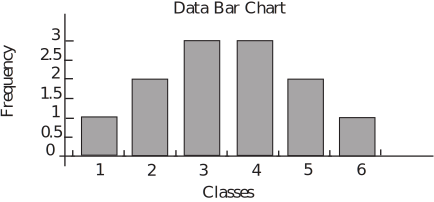
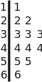
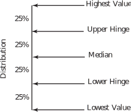
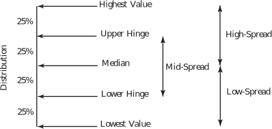
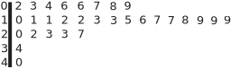
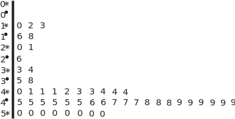
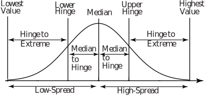

1 Exploratory data analysis
1.1 Introduction
The title ‘Exploratory Data Analysis’ (EDA) is usually taken to mean the activity by which data is explored and organized in order that information it contains is made clear. This branch of statistics usually deals with summary statistics which are resistant to departures from normality. The techniques used in EDA were first developed by the statistician John Tukey and for details of EDA which are beyond this open learning booklet, you are referred to the text Exploratory Data Analysis, by J.W. Tukey, Addison-Wesley, 1977. Tukey’s techniques have been used in innumerable papers and books since that date.
1.2 The basics of EDA
The basic principles followed in EDA are:
- To measure the location and spread of a distribution we use statistics which are resistant to departures from normality;
- To summarise shape location and spread we use several statistics rather than just two;
- Visual displays as well as numerical displays are used to summarise information obtained about shape, location and spread.
You can see these principles illustrated below.
Traditionally, the location and spread of a distribution are measured by calculating its mean and standard deviation. The problem with these statistics is that are sensitive to the influence of extreme values. For example, the data set
1, 2, 2, 3, 3, 3, 4, 4, 4, 5, 5, 6
has mean and standard deviation . These values are quite acceptable since the distribution is symmetrical about its mean of 3.5. The symmetry is easily seen simply be inspecting the data although the bar chart below might make the symmetry more obvious.
Figure 8

The shape of the distribution may also be shown by the stem-and-leaf diagram below. Notice that the stem consists of the numbers 1 to 6 and the leaves are just the members of each class.
Figure 9

You will study the stem-and-leaf diagram in more detail later in this Workbook.
The effects of changes in extreme values are easily illustrated by looking at what happens if we take the last number to be 60 instead of 6. This destroys the symmetry of the distribution and gives mean and standard deviation . Clearly, these values do not describe the distribution very well at all, a mean which is higher than 92% of the members of the distribution can hardly be described as representative!
The simplest and most common examples of resistant statistics are those based on the idea of rank order - we simply order a distribution starting at the highest value and ending at the lowest value (or lowest to highest).
Key Point 5
The five essential statistics based on rank order are illustrated in the diagram below:

Key Point 6
Using the values in Key Point 5 other statistics which represent the shape or spread of the distribution may be defined. These statistics are known as the Mid-Spread, High-Spread and Low-Spread and their definition is indicated in the diagram below.

Elementary EDA recommends the use of a five-number summary consisting of:
- the lowest value;
- the lower hinge;
- the median;
- the upper hinge;
- the highest value.
to summarize a distribution. You will find that the five-number summary, especially when used in conjunction with the three spreads shown in the diagram above gives an adequate representation of a non-symmetrical distribution.
Notice that:
- the spreads shown in the diagram above are easily calculated once the five-number summary is known;
- the median and the hinges are unaffected by changes in extreme values.
Task!
Find the five number summary and the mid-spread, high-spread and low-spread for the distribution given below.
| 1 | 9 | 17 | 2 | 9 | 17 | 3 | 10 | 18 | 3 | 11 | 19 | 4 | 12 | 19 |
| 5 | 12 | 20 | 6 | 13 | 21 | 6 | 13 | 22 | 7 | 14 | 23 | 8 | 16 | 27 |
| 1 | Lowest Value = 1 |
| 2 | |
| 3 | |
| 3 | |
| 4 | |
| 5 | |
| 6 | Lower Hinge = 6 Low-Spread = 11 |
| 6 | |
| 7 | |
| 8 | |
| 9 | |
| 9 | |
| 10 | |
| 11 | |
| 12 | Median = 12 Mid-Spread = 11.5 |
| 12 | |
| 13 | |
| 13 | |
| 14 | |
| 16 | |
| 17 | |
| 17 | |
| 18 | |
| 19 | Upper Hinge = 17.5 High-Spread = 15 |
| 19 | |
| 20 | |
| 21 | |
| 22 | |
| 23 | |
| 27 | Highest Value = 27 |
1.3 The stem-and-leaf diagram
You have already seen a basic stem-and-leaf diagram and you know that it shows the shape of a distribution well. Here you will learn how to handle larger amounts of data to form stem-and-leaf diagrams. As you will see, one set of data can give rise to more than one stem-and-leaf diagram and highlight different aspects of the data. Look at the data set below:
| 11 | 9 | 6 | 27 | 17 | 2 | 19 | 12 | 8 | 17 | 3 | 10 | 23 | 6 | 18 |
| 13 | 11 | 22 | 13 | 19 | 4 | 12 | 23 | 34 | 19 | 15 | 7 | 40 | 16 | 20 |
Using the numbers to the left of the stem to represent 10s and the numbers to the right to represent units we obtain the stem-and-leaf diagram shown below.

Notice that the skewed nature of the data stands out immediately. What also stands out are the following:
- the 10s class has the highest number of members;
- the modal (most frequently occurring) value is 19;
- the 30s and 40s tie for the least number of members (one each).
This is not new information, we could have written these fact down after properly inspecting the original raw data. The advantage of the stem-and-leaf diagram is that it enables these facts to be expressed in a clear and obvious way. As a further illustrative example, look at the data in the table below which we will use to draw two stem-and-leaf diagrams.
| 9.5 | 11.9 | 20.0 | 33.4 | 40.1 | 50.0 | 12.7 | 21.0 | 33.6 | 40.6 |
| 50.0 | 15.5 | 26.4 | 35.4 | 41.1 | 50.0 | 17.7 | 37.9 | 41.3 | 50.0 |
| 41.9 | 50.4 | 43.0 | 43.3 | 43.6 | 43.7 | 43.8 | 44.7 | 44.9 | 45.0 |
| 45.1 | 45.2 | 45.3 | 45.5 | 46.1 | 46.5 | 46.6 | 47.1 | 48.0 | 48.2 |
| 48.5 | 48.4 | 48.6 | 48.7 | 48.8 | 48.9 | 49.4 | 49.5 | 49.6 | 49.8 |
1.4 Drawing a stem-and-leaf diagram
We can start by looking at the data as it is displayed by a stem-and-leaf diagram. Here we will use two-digit leaves with the first digit representing units and the second digit representing tenths. The tens are represented by the numbers to the left of the stem.
| 0 | 95 |
| 1 | 19, 27, 55, 77 |
| 2 | 00, 10, 64 |
| 3 | 34, 36, 54, 79 |
| 4 | 01, 06, 11, 13, 19, 30, 33, 36, 37, 38, 47, 49, 50, 51, 52, 53, 55, 61, 65, 66, 71, 80, 82, 84, 85, 86, 87, 88, 89, 94, 95, 96, 98 |
| 5 | 00, 00, 00, 00, 04 |
Notice that all we have really done is rank the data from the lowest value to the highest value reading from top to bottom. This particular display has over half of its members crushed into one class - the 4-class. It may be informative to split the classes and look more closely at the data.
This can be done by:
- rounding the raw data to two figures;
-
splitting each class according to the rule
- second digit 0 - 4:
- second digit 5 - 9:
The rounded raw data now appear as follows
| 10 | 12 | 20 | 33 | 40 | 50 | 13 | 21 | 34 | 41 |
| 50 | 16 | 26 | 35 | 41 | 50 | 18 | 38 | 41 | 50 |
| 42 | 50 | 43 | 43 | 44 | 44 | 44 | 45 | 45 | 45 |
| 45 | 45 | 45 | 46 | 46 | 47 | 47 | 47 | 48 | 48 |
| 49 | 48 | 49 | 49 | 49 | 49 | 49 | 50 | 50 | 50 |
The stem and leaf diagram now becomes

Essentially, the classes have been split according to the usual rule for rounding decimals. This process can make certain information contained in the data a little more obvious than the previous stem and leaf diagram. For example:
- the values in the 3-class are evenly distributed between both halves of the class in the sense that each half has two members;
- the 4-class is split in the ratio 2:1 in favour of the upper half of the class;
- the values in the 5-class are all in the lower half of the class.
You should have realised that:
- this is not new information - the new display has merely highlighted certain aspects of the raw data;
- some of the conclusions may have been affected by the rounding process.
Looking at the original stem and leaf diagram of the Inter-party data it is easy to produce a five-number summary of the data. The summary is:
- The lowest value, this is 9.50;
- The lower hinge, this is 39 (to find the lower hinge average the 12th and 13th values);
- The median, this is 45.05 (the average of the 25th and 26th values);
- The upper hinge, this is 48.55 (to find the upper hinge average the 37th and 38th values);
- The highest value, this is 50.4.
The corresponding spreads are:
- The low-spread, this is 45.05 - 9.50 = 35.55;
- The mid-spread, this is 48.55 - 39.00 = 9.55;
- The high-spread, this is 50.40 - 45.05 = 5.35.
Notice that the spreads indicate a considerable deviation from normality.
For an ideal normal distribution, we would expect:
- The distances between the median and hinges to be equal
- The high-spread and low-spread to be equal
- The distances between the hinges and the extremes to be equal
as shown in the following diagram.
Figure 10

Task!
Using the rounded data given on page 32 find the five number summary. Use your summary to check the data for normality and comment on any deviations from normality that you find.
Data
| 10 | Lowest Value = 10 | |
| 12 | ||
| 13 | ||
| 16 | ||
| 18 | ||
| 20 | ||
| 21 | ||
| 26 | ||
| 33 | ||
| 34 | ||
| 35 | ||
| 38 | Lower Hinge = 39 | Low-Spread = 35 |
| 40 | ||
| 41 | Hinge to Extreme = 29 | |
| 41 | ||
| 41 | ||
| 42 | ||
| 43 | ||
| 43 | ||
| 44 | ||
| 44 | ||
| 44 | ||
| 45 | ||
| 45 | ||
| 45 | Median = 45 | Median to Lower Hinge = 6 |
| 45 | ||
| 45 | ||
| 45 | Median to Upper Hinge = 4 | |
| 46 | ||
| 46 | ||
| 47 | ||
| 47 | ||
| 47 | ||
| 48 | ||
| 48 | ||
| 48 | ||
| 49 | Upper Hinge = 49 | High-Spread = 5 |
| 49 | ||
| 49 | ||
| 49 | ||
| 49 | ||
| 49 | ||
| 50 | Hinge to Extreme = 1 | |
| 50 | ||
| 50 | ||
| 50 | ||
| 50 | ||
| 50 | ||
| 50 | ||
| 50 | Highest Value = 50 |
Comparing values as indicated by the diagram on page 24 gives the following results:
| Low-Spread = 35 | High-Spread = 5 |
| Lower Hinge to Extreme = 29 | Upper Hinge to Extreme = 1 |
| Median to Lower Hinge = 6 | Median to Upper Hinge = 4 |
While there are no hard-and-fast rules for comparing figures such as those obtained here, many authors suggest that the figures should be within 10% of each other before normality can be assumed. This is clearly not the case here. We conclude that the distribution of data being investigated is not symmetrical. In fact the figures above suggest that the distribution is skewed to the left, a fact supported by the stem-and-leaf diagram of the same data to be found above. [Note: skewness is defined on page 41.]
Remember that the term ‘skewness’ refers to the location of the ‘tail’ of a distribution.

1.5 The box-and-whisker diagram
In order to visually summarise a data set we can use a box and whisker plot as well as a stem-and-leaf diagram. A box-and-whisker diagram of the original (unrounded) Inter-Party Competition data is shown below and the procedure necessary for drawing a plot is discussed.
You should note that there are several similar methods recommended by different authors for drawing box-and-whisker plots and so the methods recommended in statistical texts may vary a little from those given below.
Figure 11
The diagram is constructed as follows:
-
The Box
- The left-hand vertical is placed at the lower hinge (39);
- The right-hand vertical is placed at the upper hinge (48.65);
- The vertical in the box is placed at the median (45.05).
-
The Whiskers
Notice that the mid-spread of the data (the difference between the hinges) is 9.65.
- Find the greatest value which is within one mid-spread (9.65) of the upper hinge (48.65). Here so the greatest value is 50.4.
- Find the least value which is within one mid-spread (9.65) of the lower hinge (39). Here so the least value is .
Connect the greatest and least values to the box by means of dashed lines.
- The Outlying Values
Mark as large dots any values which are more than 1.5 mid-spreads from the hinges. In this case 1.5 mid-spreads give a value of about 14.33 and so we mark dots which represent values which are higher than 48.65 + 14.33 = 62.88 and values which are lower than 39 - 14.33 = 24.67. In this example there are no values greater than 62.88, but there are 7 values which are less than 24.67. Notice that half of the data values lie in the box and that the tails show up well in the diagram. The diagram shows the left-skew (skewness refers to the tail) present in the data.